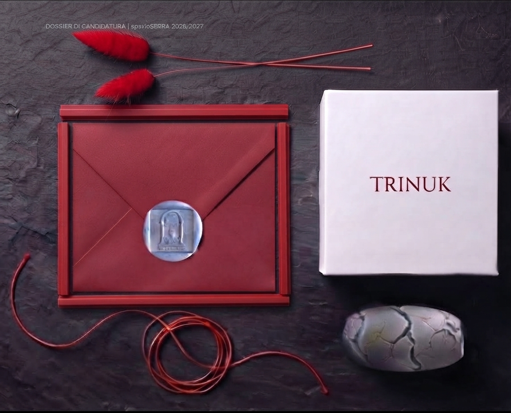

[ Tieni premuto sullo schermo per l'innesco ]
Reperto 01 // Yue Lao
Status: Atto Iniziale // Bio-Feedback AttivoL'archetipo del legame primordiale. Non celebra l'amore ideale, ma la forza brutale di ricucire le crepe e abitare le distanze imperfette. Richiede l'intervento manuale per chiudere il patto nello spazio fisico.
MATERIA: Totem SLS, Cotone grezzo, Ceralacca scarlatta.
INNESCO: Patto di Pietra e Filo.
INNESCO: Patto di Pietra e Filo.